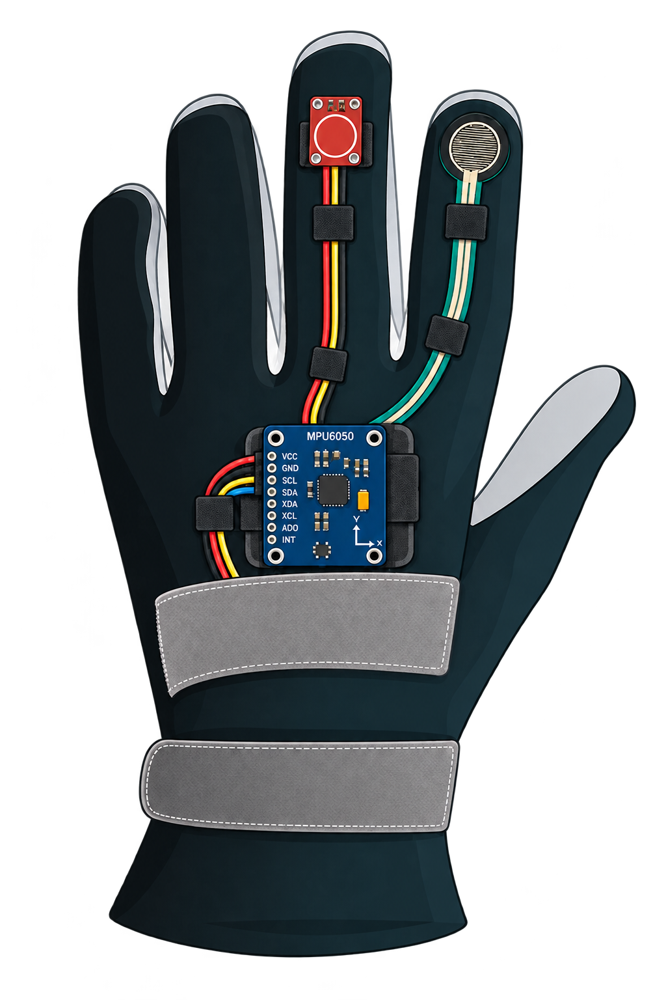

Cada movimiento importa
BradyHand es una herramienta de apoyo para el seguimiento de movimientos asociados a la bradicinesia mediante un guante inteligente y una plataforma web.
Iniciar sesión
¿Cómo funciona BradyHand?
El sistema registra diferentes movimientos de la mano y permite consultar sus resultados desde la plataforma.
Realizar la prueba
El paciente utiliza el guante y realiza los movimientos indicados por el profesional.
Registrar datos
Los sensores capturan información relacionada con el movimiento, contacto y presión.
Consultar resultados
El profesional puede consultar las pruebas y el historial de cada paciente.
Movimientos evaluados
BradyHand utiliza diferentes acciones de la mano para registrar características relevantes del movimiento.

Flexión y extensión
Movimiento repetitivo de la muñeca para analizar velocidad y comportamiento del movimiento.

Toque de dedos
Contacto repetitivo entre el dedo medio y el pulgar para registrar frecuencia y pausas.

Presión
Presión entre los dedos para registrar cambios en la fuerza aplicada durante la prueba.